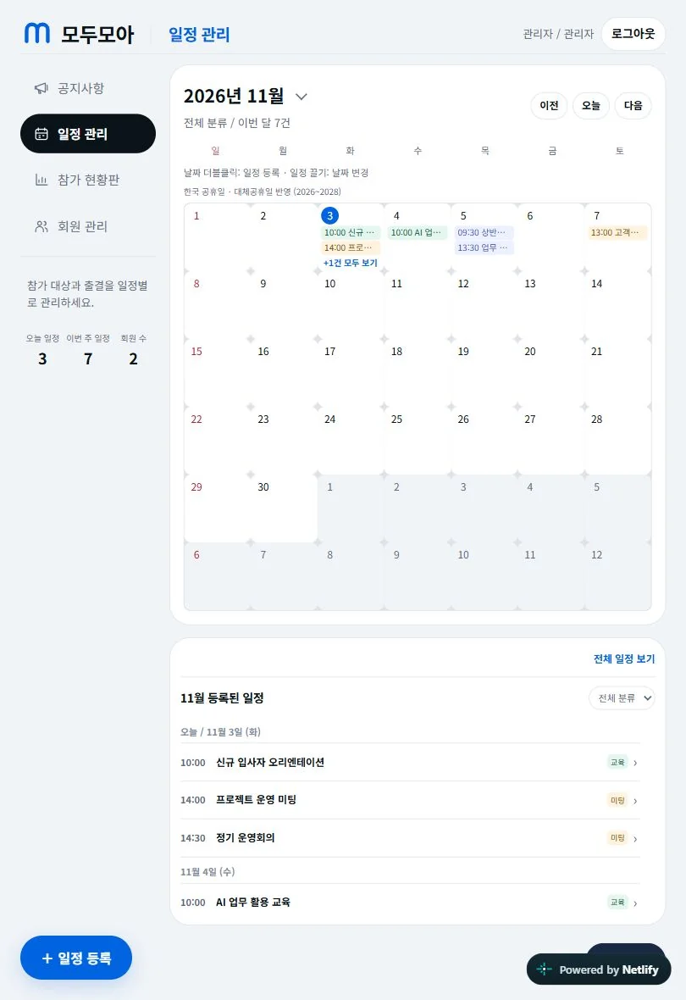
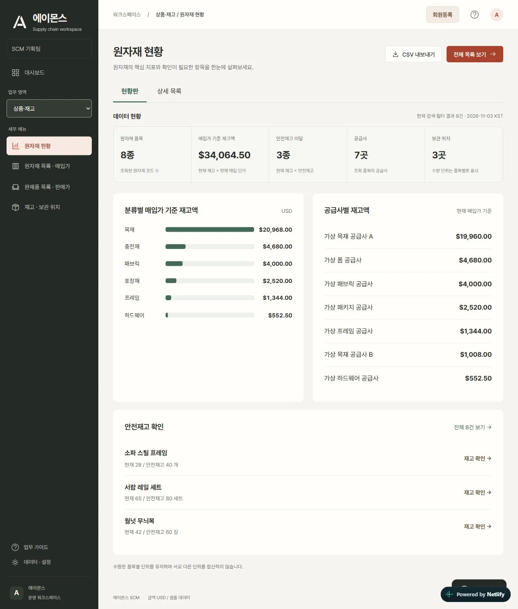
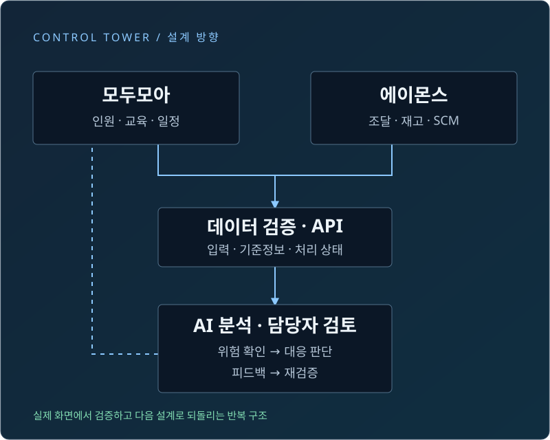

업무를 학습 과제로 전환
수요·납기·재고 문제로 머신러닝 기초를 설명하고, 입력 변수·가중치·임계값과 예측 결과의 관계를 다뤘습니다.
공공조달 · AI 교육 · 운영 시스템 설계
머신러닝 기초를 가르치고,
배운 내용을 업무 프로그램으로 만들다.
교육생이 데이터를 읽고, AI로 프로그램을 만들고, 결과를 검증하도록 이끌었습니다. 모두모아와 에이몬스를 인원·일정·SCM을 함께 보는 컨트롤 타워의 두 축으로 설계했습니다.
회원 체험 guest / guest1234체험판 로그인 아래에도 안내됩니다. 가상 데이터만 사용합니다.
개인 제작·교육 프로젝트 소개입니다. 두 서비스의 통합 운영은 설계 방향이며, 조달청 공식 운영 시스템을 뜻하지 않습니다.
배경: SCM 물류·협업 설계를 표현한 AI 생성 이미지
교육자로서의 기여
수요·납기·재고 문제로 머신러닝 기초를 설명하고, 입력 변수·가중치·임계값과 예측 결과의 관계를 다뤘습니다.
인원·출결·일정과 매입·재고·발주를 구분하고, AI와 협업해 모두모아·에이몬스의 화면과 데이터 흐름을 구현했습니다.
회원 명단 누락, 일정 검색, 안내 메일 등 실제 사용 과정의 문제를 확인하며 요구 정의 → 구현 → 검증 → 수정의 반복 구조를 이끌었습니다.
컨트롤 타워의 두 업무 영역
현황판에서 먼저 이상을 찾고, 목록과 상세 화면에서 근거를 확인하는 방식으로 구성했습니다.

관리자 등록과 회원가입, 참가 의사와 출결을 각각 구분했습니다. 달력·월별 조회·공지·안내문을 한 흐름에서 관리합니다.
분석 관점: 등록·수락·참석·결석을 서로 다른 지표로 집계
서비스 보기 ↗
원자재·매입가·발주·운송·출고·매출을 업무별로 분리했습니다. 가상 데이터로 재고 위험과 발주 정책을 비교합니다.
분석 관점: 재고액·안전재고 미달·결품 확률·발주 권고량
SCM 예측 보기 ↗조달 업무와 AI 교육의 연결
이번 교육은 수출·무역, 해외시장·바이어 분석, 계약·컴플라이언스, 글로벌 공공조달 전략, AI 기반 AX 프로젝트까지 폭넓게 다룹니다. 그중 저는 업무 데이터를 AI 과제로 바꾸고, 직접 프로그램으로 만들어 보는 과정을 맡았습니다.
협업 방식 교육자는 업무 시나리오와 검증 기준을 제시하고, 교육생은 실습과 질문으로 개선점을 찾으며, AI는 코드·분석 초안을 돕습니다. 최종 판단은 사람이 맡습니다.
API · 머신러닝 엔지니어링
화면은 입력과 결과 표시만 맡고, 값 검증·DB 저장·메일 발송·예측 계산은 서버가 처리합니다. API 키 같은 민감한 정보는 서버에만 보관하고, 오류와 처리 상태는 화면에서 구분해 보여줍니다.
POST /api/scm/predict
재고·수요·조달 기간을 입력하면 값의 범위를 확인한 뒤, 결품 위험 확률과 발주 권고를 돌려줍니다.
지도학습으로 결품 위험을 예측하고, 학습에 쓰지 않은 데이터로 확률을 보정했습니다. 발주 정책은 강화학습으로 만들었고, 재고 보관·결품·발주 비용을 함께 따져 비교합니다.
학습 6,500건 · 보정 1,500건 · 평가 2,000건
가상 SCM 데이터로 검증한 결과이며, 실제 조달 성과를 뜻하지는 않습니다.
현재는 두 개의 별도 서비스입니다. 모두모아의 일부 일정·출결·첨부 흐름은 브라우저 저장을 사용합니다. 통합 컨트롤 타워는 공통 기준정보, 서버 저장, 권한, 감사 이력과 운영 모니터링을 연결하는 확장 설계입니다. 예측 결과는 담당자의 판단을 돕는 제안이며 자동 발주나 인사 평가에 사용하지 않습니다.
기관의 개별 발주 요구·교육 성과 수치·기관 내부 시스템 연계는 이 공개 자료에서 확인되지 않아 실적으로 기재하지 않았습니다.
